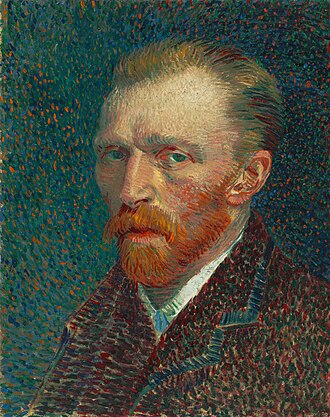
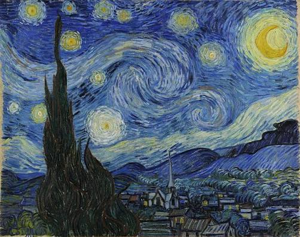
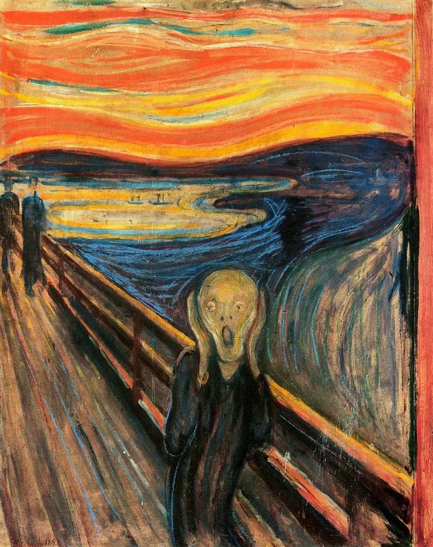
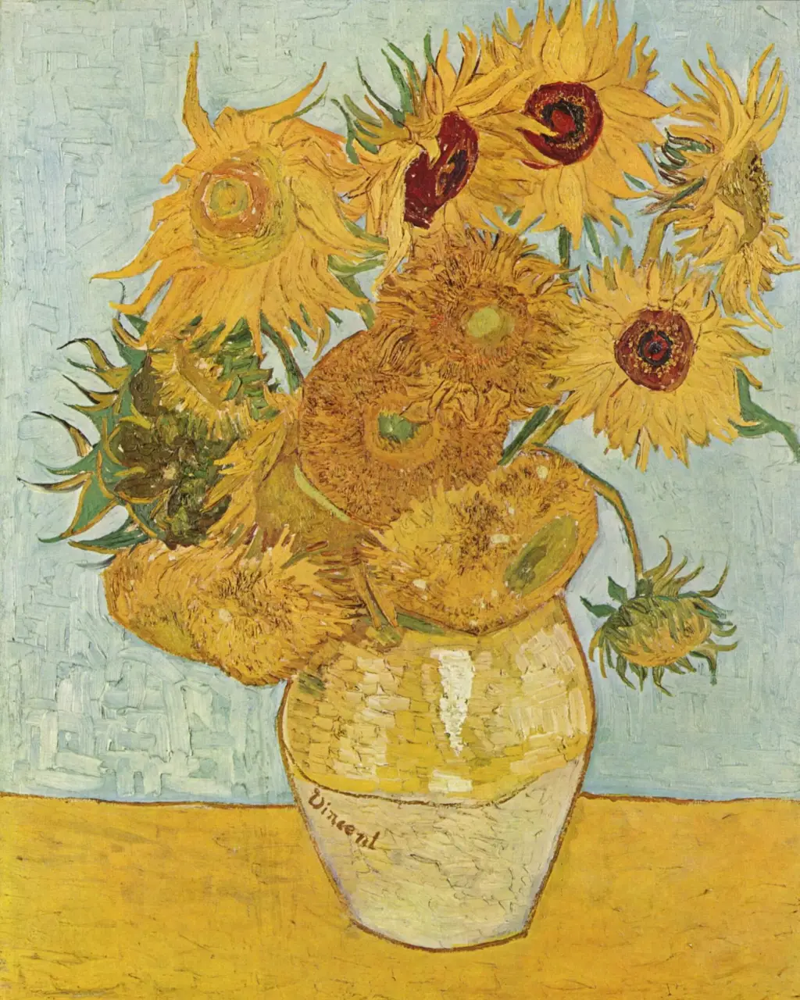
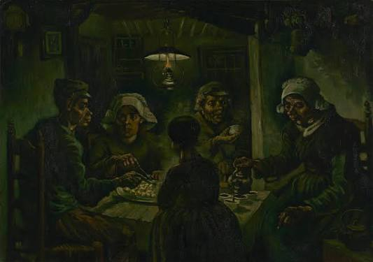
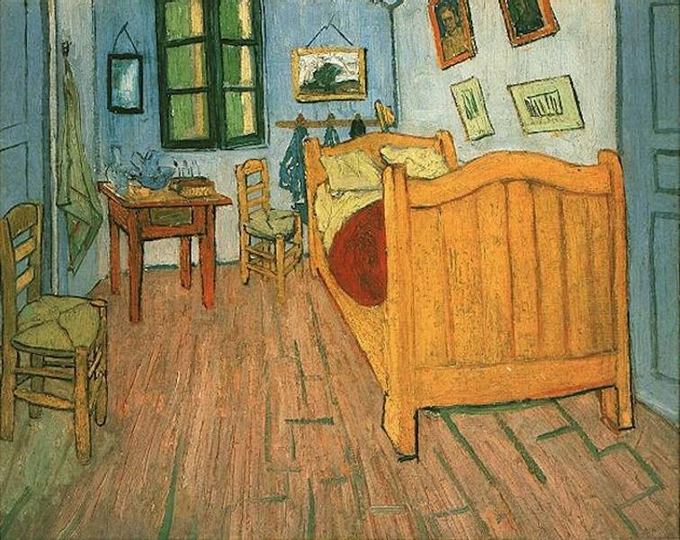

-

Noite Estrelada -

O Grito -

Os Girassóis
-

Os Comedores de Batata -

Terraço do Café à Noite -

O Quarto
-
SOBRE NÓS
A Galeria Van Gogh nasceu com o propósito de aproximar o público da genialidade e da sensibilidade de Vincent van Gogh. Mais do que um espaço expositivo, criamos um ambiente imersivo que celebra suas cores vibrantes, pinceladas intensas e a história por trás de suas obras-primas. Nossa missão é tornar a arte acessível, inspiradora e inesquecível para visitantes de todas as idades.
-
HORÁRIOS
Mergulhe nas cores vibrantes e na história de Vincent van Gogh através de obras marcantes e salas imersivas. A galeria funciona de terça a sexta, das 10h às 19h, e aos sábados e domingos, das 9h às 20h (fechada às segundas). Os ingressos custam R$ [Valor] (inteira) e R$ [Valor] (meia), com entrada gratuita às quartas-feiras. Estamos na [Endereço Completo] e o espaço é 100% acessível. Garanta seu ingresso antecipado pelo site e aproveite a visita!